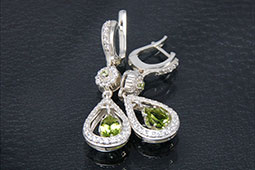
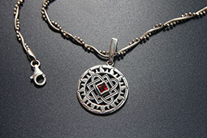
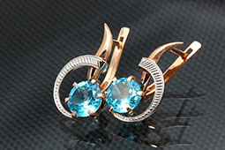
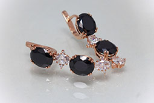
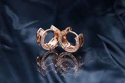
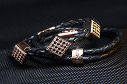
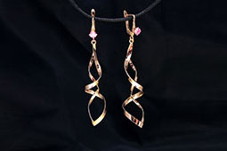

Наши работы








Наши спецаилисты производят ювелирные украшения различного уровня сложности
Стоимость всех наших изделий примерно на 40-80% ниже, чем у конкурентов по рынку.
Вы получите уникальное украшение, и выглядеть оно будет именно так, как вы того хотели.
В нашем ассортименте только украшения ручной работы. Каждое изделие уникально!
Обручальное кольцо они же свадебные кольца – символ любви и верности, есть мнение, и при надевании кольца на палец оно блокирует доступ к сердцу.
Связаться с ювелиромОбручальное кольцо они же свадебные кольца – символ любви и верности, есть мнение, и при надевании кольца на палец оно блокирует доступ к сердцу.
Выслать образецОбручальное кольцо они же свадебные кольца – символ любви и верности, есть мнение, и при надевании кольца на палец оно блокирует доступ к сердцу.
Рассчитать стоимостьОбручальное кольцо они же свадебные кольца – символ любви и верности, носят кольцо на безымянном пальце правой руки, есть мнение, что от безымянного пальца идет тонкий нерв, прямо к сердцу и при надевании кольца на палец, кольцо как бы блокирует доступ к сердцу.
Обручальное кольцо они же свадебные кольца – символ любви и верности, носят кольцо на безымянном пальце правой руки, есть мнение, что от безымянного пальца идет тонкий нерв, прямо к сердцу и при надевании кольца на палец, кольцо как бы блокирует доступ к сердцу.
Нет содержимого
Нет содержимого
1
2
3
4
Обручальное кольцо они же свадебные кольца – символ любви и верности, носят кольцо на безымянном пальце правой руки, есть мнение, что от безымянного пальца идет тонкий нерв, прямо к сердцу и при надевании кольца на палец, кольцо как бы блокирует доступ к cердцу.
Eric Caldwell 19.09.2017Обручальное кольцо они же свадебные кольца – символ любви и верности, носят кольцо на безымянном пальце правой руки, есть мнение, что от безымянного пальца идет тонкий нерв, прямо к сердцу и при надевании кольца на палец, кольцо как бы блокирует доступ к cердцу.
Eric Caldwell 19.09.2017Обручальное кольцо они же свадебные кольца – символ любви и верности, носят кольцо на безымянном пальце правой руки, есть мнение, что от безымянного пальца идет тонкий нерв, прямо к сердцу и при надевании кольца на палец, кольцо как бы блокирует доступ к cердцу.
Eric Caldwell 19.09.2017Санкт-Петербург, Аллея Поликарпова д.2.